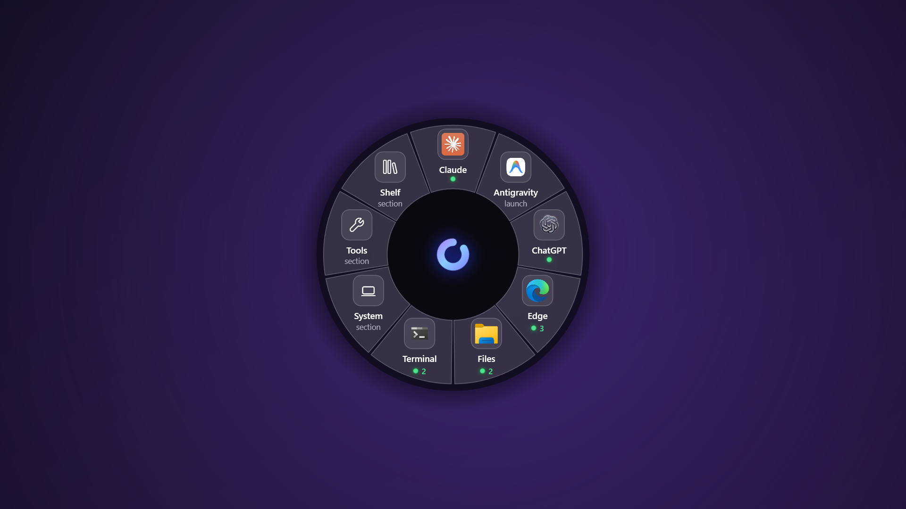

The gesture
The wheel opens where you are
No window to find, no launcher to focus. The wheel appears centred on the cursor with your curated apps on the inner ring, then the outer ring follows whatever you point at.
Flick to a slice and let go to run it. Your apps, their live windows, ten popover tools and the system controls — all one gesture away, without moving your hand to the taskbar.
Coming to the Microsoft Store. No account, no telemetry, no servers.
Unedited captures from Gola on Windows 11 — cropped to the wheel so you can read it, but nothing sped up and nothing staged. Click any clip to watch it full size.
No window to find, no launcher to focus. The wheel appears centred on the cursor with your curated apps on the inner ring, then the outer ring follows whatever you point at.
App slices behave like taskbar buttons. Not running, it launches. One window, it focuses. Several, and they fan out on the outer ring so you pick the exact window in the same flick.
Timer, calculator, colour picker, clipboard history, magnifier, screenshot, quick note, caffeine, focus dim and dictate. They open as popovers next to the wheel and can be pinned.
The System slice fans out Settings, Task Manager, Wi-Fi, Volume, Sleep and Lock. Sections work exactly like apps do — point at one, and its actions appear on the outer ring.
Settings keeps a real wheel on screen while you change it. Five size presets (S, S+, M, L, XL), label length and how many windows each fan shows — all visible before you commit.
A web mock-up of the gesture. Press 1–9 or hover a slice; the clip beside it shows the same step in the real app.
3 live windows open. Slide onto an outer preview, or release to focus the main window.
What to try in order, with the matching recording where one exists.
Hold Ctrl+Alt, or your configured mouse button. The wheel opens centred on the cursor and stays open while you hold.
The inner ring holds your curated apps plus System, Tools and Shelf. A green dot means running; a number means that many windows.
Stay on a slice with several windows and they fan onto the outer ring. Slide onto one and let go to focus it. Release on the slice itself to focus the main window.
Press 1–9 to jump straight to a slice. Tools open as popovers that stay after the wheel closes. Esc, or releasing outside the wheel, dismisses it.
Settings → Wheel changes the size, labels and fan depth against a live preview. Settings → Keymap changes the chord if AltGr collides with your layout. Dictation and the Telegram Shelf are both opt-in.
The stills below are the Microsoft Store listing shots; the clips above are screen recordings.
You choose what sits on the inner ring. Running apps carry a green dot and a window count, so the wheel doubles as a status glance.

Several windows on one app fan out on the outer ring, each with its own label, plus a “New window” action on apps that support one.

Timer, calculator, colour picker, clipboard history, magnifier, screenshot, quick note, caffeine, focus dim and dictate — all pinnable.

Settings, Task Manager, Wi-Fi, Volume, Sleep and Lock, without hunting through the tray or the Start menu.

Chord and mouse-button bindings, five wheel sizes, motion, per-app entries, and a live preview beside every change.

Two features ship switched off, because both need a permission you should grant deliberately rather than by default:
@BotFather /newbot. No Gola account or server is involved.The glyphs already on your machine. Nothing bundled, nothing licensed.
Gola is finishing Microsoft Store certification. Leave an address and you get one email when it is live — nothing else, no list, and it is deleted once the launch mail goes out.
The ones this app actually attracts.
No. It installs a system-wide keyboard hook (the only way Windows reports a key being held and released), captures screen content for the window previews, and opens the microphone if you turn dictation on.
Keystrokes are compared against your trigger chord and passed straight on — never recorded, never transmitted. Screen capture stays local. The microphone opens only while dictating. No account, no telemetry, no servers. Details in the privacy policy.
It is in Microsoft Store certification. There is no public build yet and no date worth promising, so the honest answer is “soon, and you will hear when.” Join the waitlist and you get exactly one email on the day.
Keyboard hooks, screen capture and launching configured commands are, together, a heuristic match for the things antivirus engines watch for. Every one of them is required for a hold-and-flick launcher to work at all. The Store build is signed by Microsoft.
Almost always a trigger conflict. On keyboard layouts that use AltGr — which Windows reports as Ctrl+Alt — the default chord collides with ordinary typing. Change it in Settings → Keymap to Ctrl+Shift.
Settings → Keymap takes any combination of Back, Forward and Middle. They work as toggles too — hold and flick, or tap to leave the wheel open for a click.
Trackpad: pick Middle, then in Windows Settings → Bluetooth & devices → Touchpad → Three-finger gestures, set Taps to “Middle mouse button”.
%APPDATA%\Gola\ for settings, and %USERPROFILE%\Gola\ for screenshots, notes, Shelf files and the speech model. Nothing leaves the machine.